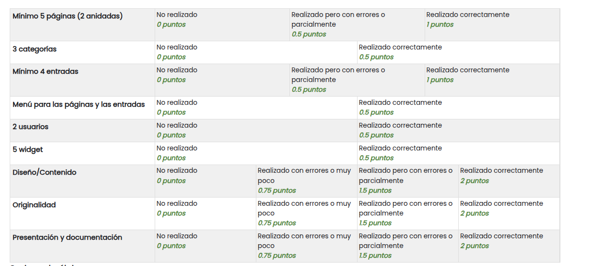

U2. Práctica de WordPress
FICHA TÉCNICA DE LA ACTIVIDAD ¶ |
||
|---|---|---|
| Unidad Didáctica | U2. Instalación, configuración y utilización de Gestores de Contenido | |
| Nombre de la Tarea | U2. Práctica de WordPress | |
| Resultado de Aprendizaje (RA) | Instala gestores de contenidos, identificando sus aplicaciones y configurándolos según requerimientos. | |
| Criterios de Evaluación (CE) | b. Se han identificado los requerimientos necesarios para instalar gestores de contenidos. c. Se han gestionado usuarios con roles diferentes. d. Se ha personalizado la interfaz del gestor de contenidos. e. Se han realizado pruebas de funcionamiento. f. Se han realizado tareas de actualización gestor de contenidos, especialmente las de seguridad. g. Se han instalado y configurado los módulos y menús necesarios. h. Se han activado y configurado los mecanismos de seguridad proporcionados por el propio gestor de contenidos. i. Se han habilitado foros y establecido reglas de acceso. k. Se han realizado copias de seguridad de los contenidos del gestor. |
|
| Fecha Publicación/Entrega | Date | Date |
MÉTODO DE ENTREGA Y FORMATO ¶ |
||
| Documento |
|
|
| Exposición |
|
|
1. DESCRIPCIÓN GENERAL. OBJETIVOS ¶
Una vez que hemos aprendido a desplegar Wordpress y configurar los elementos más importantes, vamos a realizar un proyecto de manera individual.
Se realizará una presentación en clase, de los aspectos más importantes del sitio, así como de su elaboración (entre 5 y 10 minutos).
La temática de la página será la empresa sobre la que se realizó la práctica HTML y deberá contener al menos los siguientes elementos.
2. CONSIDERACIONES PREVIAS ¶
Se recomienda realizar la instalación de un nuevo gestor de contenidos WordPress en una nueva carpeta de tu máquina a la que denominaremos practica. El servidor web que puedes utilizar es el que ya tienes creado o crear otro desde cero, para evitar posibles conflictos que pueden surgir o para solucionar problemas anteriores. En el caso de realizarlo en el anterior se podrá obtener la nota máxima.
Si utilizamos nuestra instancia deberemos seguir los pasos de la tarea 2.1. Tened en cuenta que la base de datos será distinta (p.e. wordpress2) y el usuario (p.e. wordpress2). La carpeta donde moveremos Wordpress será practica
Si utilizamos una nueva instancia tenemos que hacer lo anterior pero previamente hay que montar Apache, instalar php y MySQL (ver el documento donde se explica cómo crear una instancia o vuestra tarea 2.1. si se documentó bien).
Se recuerda que ya hemos utilizado un plugin para realizar copias de seguridad. Tenedlo en cuenta.
3. ACTIVIDADES A REALIZAR ¶
Fase 1: Preparación del servidor e instalación de WordPress
Fase 2: Configuración y personalización del sitio (tema y aspecto global)
Fase 3: Realización de los elementos obligatorios en el sitio:
Al menos 5 páginas, de las cuales al menos dos de ellas deben tener un mínimo de 2 páginas que estén anidadas. (Deberá existir un menú de páginas en el que se puede apreciar dicho anidamiento).
Al menos 4 entradas clasificadas en 3 categorías diferentes
Deberá de existir un menú para acceder a todas las páginas y entradas; se debe poder apreciar el anidamiento de las entradas en dicho menú.
En las páginas y entradas se deben de hacer uso de la mayoría de los elementos utilizados en las tareas (títulos, párrafos, imágenes, tablas, listas, vídeos, documentos,...).
Se deberá de poder acceder a las entradas de forma similar a las tareas realizadas anteriormente (desde el cuerpo de la página principal y desde un menú.
Deberán de existir al menos 2 usuarios (uno para el profesor)
Widgets: Deberá tener al menos 5 widgets.
Fase 4: Realizar una copia de seguridad (se recomiendan varias copias para no perder lo que se vaya realizando).
Fase 5: Exposición y defensa de la práctica en clase
4. CALIFICACIÓN
La práctica será evaluada según los siguientes criterios:
Elementos obligatorios (4 puntos): se valorará que la página contenga todos los elementos obligatorios de la página así como el trabajo realizado así la plataforma utilizada (la anterior o nueva)
Diseño/contenido (2 puntos): se valorará el diseño y que todos los elementos de la página encajen en la temática elegida. También se tendrá en cuenta la calidad de la información/contenido. Fotografías, videos y otro tipo de elementos.
Originalidad (2 puntos): se valorará el uso de widgets o elementos no vistos en clase, y deberá de explicarse durante la presentación como se utilizan. Se valorará el uso de otros elementos originales o creaciones propias con css o html.
Presentación y documentación (2 puntos): El proyecto deberá exponerse al resto de los compañeros en clase, se valorará que el alumno conozca completamente todos los elementos de la página y pueda responder a las preguntas que le realice el profesor o sus compañeros. También se realizará y entregará un documento, donde se explique el proceso realizado, incluyendo las capturas necesarias.
IMPORTANTE: El retraso en la entrega, no cumplir los requisitos o la realización de forma inadecuada puede penalizar la calificación o anular la entrega
CRITERIOS DE CALIFICACIÓN (RÚBRICA) ¶
